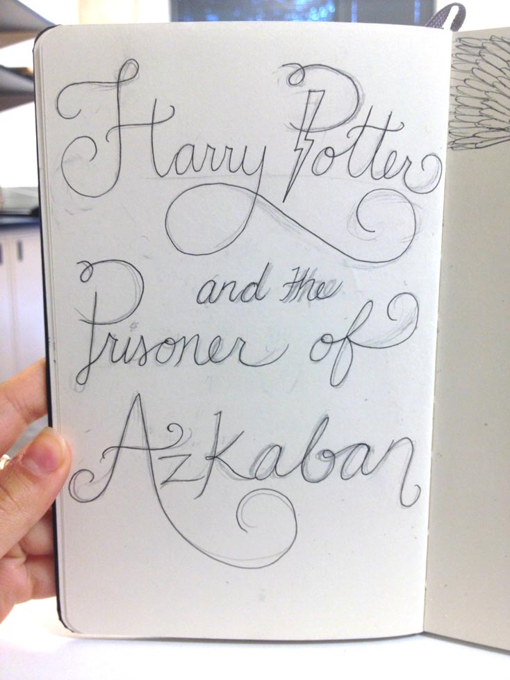
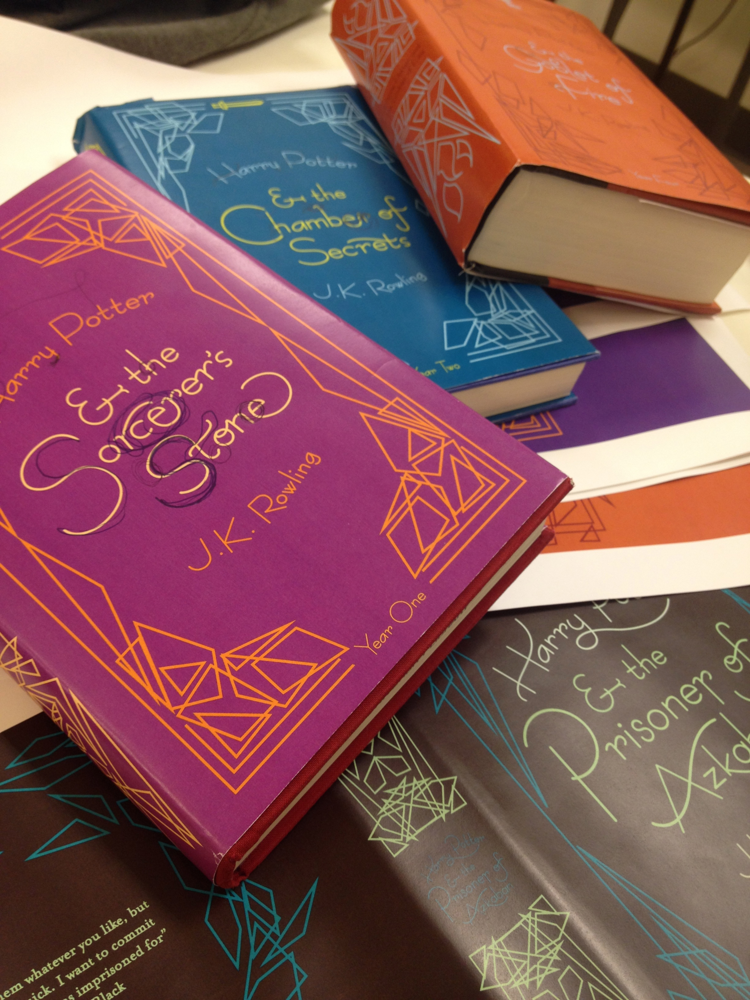
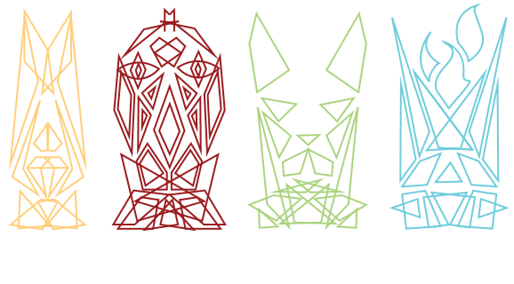
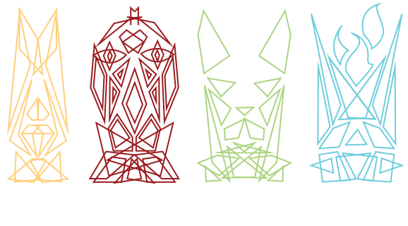

The Harry Potter series is very special to many millennials who grew up with the books. Each novel is more complex than the last, and riddled with fantasticly deep character development and lessons. The book set becomes a nostalgic relic — a precious commodity to those who find so much significance in it.
With this redesign, I wanted to honor the Harry Potter series, appealing to those now-grown-up millenials, using clean geometric lines and symbols to represent each addition to the series. As the books progress, and the wizarding world falls further and further into ruin, so do the covers.
"We are only as strong as we are united, as weak as we are divided." — Albus Dumbledore
A little bit about selecting and creating the type
  


talk about the spines here --


"Happiness can be found in the darkest of times, if one only remembers to turn on the light." — Albus Dumbledore